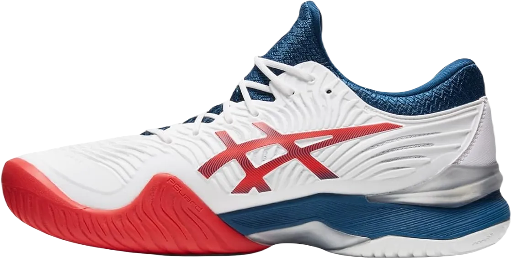
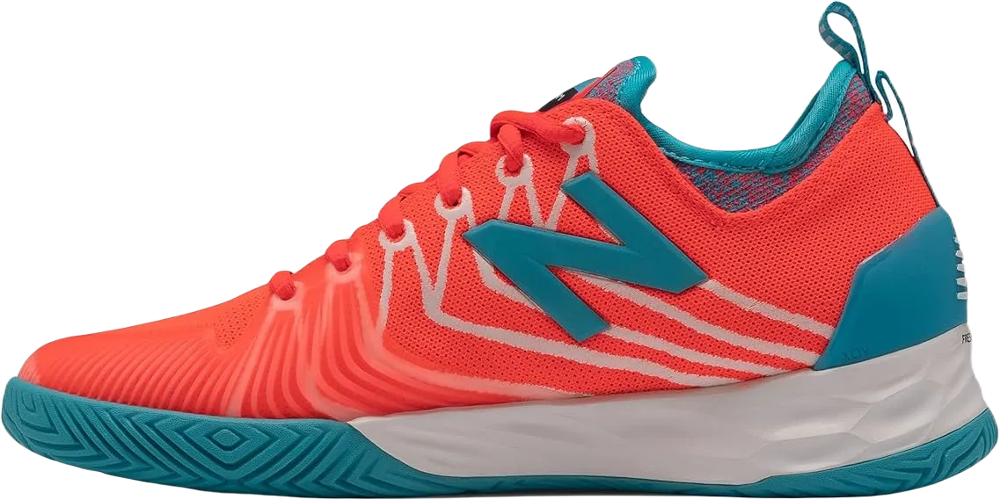
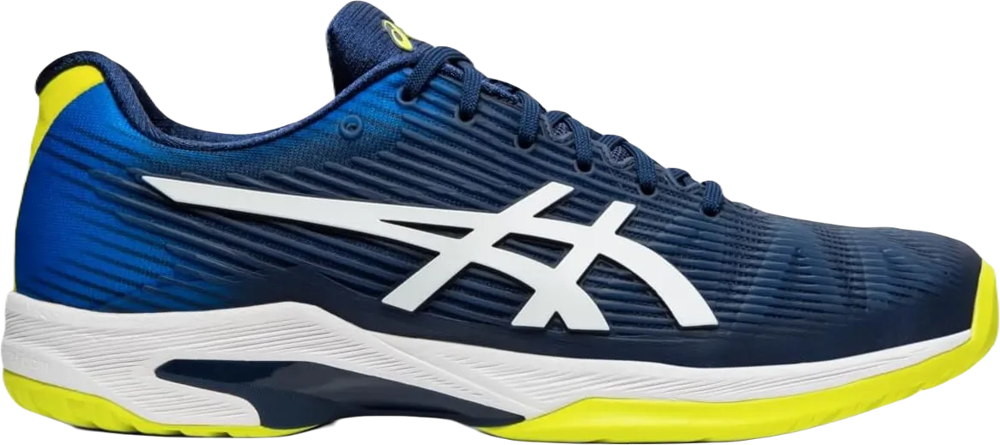

9 Best Cushioned Tennis Shoes 2024
While this isn’t a common issue for many, some individuals may experience discomfort where the bones on the outer edge of the ankles (fibula and tibia) meet the upper edge of their shoes.
When trying on a shoe for tennis, it's important to check for any irritation around your ankles, as this could affect your performance and lead to discomfort during play.
-
#1
Asics court docket FF 2
.webp)
What makes them irresistible: Faster and more comfortable than most shoes available, these FF 2 court shoes are among our top picks for court footwear due to their comfort, support, grip, and stability.
Designed in collaboration with one of the most influential players on the ATP tour, Novak Djokovic, these shoes empower competitors to push their limits and perform confidently on the court. They're a must-try for any serious player. -
#2
Men’s court FF 2
Highlights: Favored by TW ladies, the Stella Court is available exclusively as a women's model. Formerly known as the Adidas Stella Barricade, the Stella Court remains stylish and incorporates the same features and technology that made it popular in previous years.
The double layer of Primeknit construction is incredibly lightweight and breathable, while the seamless bootee design provides instant comfort.
These shoes maintain their stability thanks to the Torsion system, and the enhanced cushioning ensures they remain responsive during extended hours on the court. -
#3
Asics Gel 8 solution
.webp)
Why We Love It: For the active player, the Gel Resolution 8 excels in stability, durability, and overall balance while providing a secure fit. If you're playing in warm conditions, these shoes are a must-try.
The medium break-in period is necessary, but players will soon find that the performance of this model is well worth the wait.
With a sturdy outsole designed to keep you grounded on the court every day, it also comes with a six-month durability guarantee. If you've previously worn Gel Resolutions, we can confidently say that the 8s are one of our favorite updates in the lineup. -
#4
Nike Air Zoom Vapor Cage four
.webp)
Why We Love It: Are you looking for the most supportive and stable shoe on the market? Rafael Nadal and TW players would agree that Nike has achieved this by combining the best features of his tennis shoes (Vapor + Cage).
With a high-top bootie that secures your fit, players will enjoy a bouncy underfoot experience.
Additionally, these shoes come with a six-month durability guarantee on the outsole. If you're a slider on hard courts, these shoes are designed specifically for you! -
#5
Nike Air Zoom Vapor X
.webp)
The Nike Air Zoom Vapor X has established itself as one of the most popular tennis shoes on the market, worn by stars like Roger Federer.
One of the primary reasons we love this shoe is its exceptional performance packaged in a lightweight design. While durability might be a concern due to Nike’s focus on minimizing weight, we’re more than happy to make that trade-off.
Located in the heel, you'll find Nike's Zoom Air technology, complemented by Pylon throughout the rest of the midsole. This combination offers responsive comfort that strikes the perfect balance between being soft and firm. -
#6
Adidas Sole Court growth
.webp)
One of our current favorite tennis shoes is the Adidas Sole Court Boost, known for its all-around performance, providing a secure, strong, and sturdy fit.
The outsole features a robust herringbone pattern that offers excellent traction on all court surfaces, while the high-quality materials protect the shoe and wrap around the inner edge for added support.
In the midsole, Boost technology delivers exceptional comfort while maintaining excellent responsiveness, ensuring you stay agile and supported during play. -
#7
Adidas Adizero Ubersonic 3
.webp)
Another favorite heavyweight tennis shoe is the Adidas Adizero Ubersonic 3, designed for exceptional performance on the court.
The outsole features a robust herringbone pattern that is lightweight yet powerful, making it suitable for all types of court surfaces.
One of the standout features of the Adidas Ubersonic 3 is its upper, which utilizes a specialized outer layer made from Dyneema and Vectran straps, ensuring both durability and lightness while enhancing flexibility and responsiveness. -
#8
New stability Lav
Our top pick from the New Balance lineup is the Lav, which happens to be Milos Raonic’s favorite shoe. The Lav features an outsole made of NDurance rubber, providing exceptional sturdiness and durability on the court.
One of our favorite aspects is the midsole, which utilizes Fresh Foam for comfort, especially in the heel area, ensuring a pleasant wearing experience.
Additionally, the shoe includes a cozy bootie on the inside that secures your foot in place, while the outer layer incorporates New Balance's Kinetic Stitch technology for enhanced stability. -
#9
Pace of Asics answer FF
The Asics Answer Tempo FF is an incredibly lightweight tennis shoe designed to provide both comfort and performance on the court.
The outsole is made from AHAR rubber, the same material used in the Court FF 2, featuring a herringbone tread pattern for optimal traction during play.
In the midsole, you'll find FlyteFoam, a lightweight EVA foam that enhances mobility, along with Gel technology at both the front and back of the shoe for excellent shock absorption. Additionally, the shoe incorporates a Trustic System that helps prevent twisting and maintains balance.